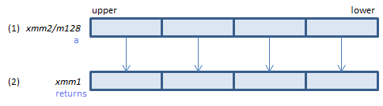

VPOPCNTD - POPulation CouNT Dword
VPOPCNTD xmm1{k1}{z}, xmm2/m128/m32bcst (V5+VPOPCNTDQ+VL
__m128i _mm_popcnt_epi32(__m128i a)
__m128i _mm_mask_popcnt_epi32(__m128i s, __mmask8 k, __m128i a)
__m128i _mm_maskz_popcnt_epi32(__mmask8 k, __m128i a)

For each DWORD, count number of bits set to one in (1) and store the result in (2).
VPOPCNTD ymm1{k1}{z}, ymm2/m256/m32bcst (V5+VPOPCNTDQ+VL
__m256i _mm256_popcnt_epi32(__m256i a)
__m256i _mm256_mask_popcnt_epi32(__m256i s, __mmask8 k, __m256i a)
__m256i _mm256_maskz_popcnt_epi32(__mmask8 k, __m256i a)

For each DWORD, count number of bits set to one in (1) and store the result in (2).
VPOPCNTD zmm1{k1}{z}, zmm2/m512/m32bcst (V5+VPOPCNTDQ
__m512i _mm512_popcnt_epi32(__m512i a)
__m512i _mm512_mask_popcnt_epi32(__m512i s, __mmask16 k, __m512i a)
__m512i _mm512_maskz_popcnt_epi32(__mmask16 k, __m512i a)

For each DWORD, count number of bits set to one in (1) and store the result in (2).
x86/x64 SIMD Instruction List
Feedback